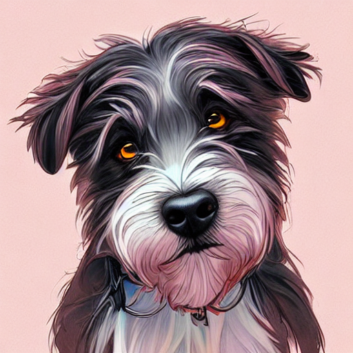

Stable Diffusion Experiment 3
Imagining myself in new images
Textual Inversion
In an earlier post I referenced work on Textual Inversion that allows new concepts to be added to the Stable Diffusion model. Textual inversion trains a new set of embeddings that can be used to generate a new object or style you provide through pictures, by loading them into a model.
|  |
Dreambooth
Dreambooth is a method to finetune the model itself - as opposed to finding embeddings for a new concept. This is more expensive in time and GPU memory, but produces much better results and gives more flexibility. I used huggingface’s great example, and with a few pictures and about an hour of training time the new model was able to generate my likeness remarkably well.
Prompt: "{newconcept} man quarter concept art, illustration, futuristic cityscape, next to space ship, Studio Ghibli, highly detailed, sharp focus, Trending on Artstation, HQ, deviantart, art by artgem" |
|
Prompt: "{newconcept} a study of cell shaded portrait of sks man quarter concept art, llustration, post grunge, concept art by josan gonzales and wlop, by james jean, Victo ngai, David Rubín, Mike Mignola, Laurie Greasley, highly detailed, sharp focus, Trending on Artstation, HQ, deviantart, art by artgem" |
The results are pretty spectacular - above, I’ve only included images in a particular style. While playing around with prompts though, more than a few of the images generated would pass as actual photographs of me.
I am so excited - I’ve worked with AI for a long time - this is a rare example of something that works very well and is open and accessible. Good job Stability AI
The Stable diffusion model is still training!